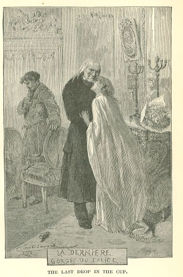

Les Misérables
CHAPTER III—THE INSEPARABLE
What had become of Jean Valjean?
Immediately after having laughed, at Cosette's graceful command, when no one was paying
any heed to him, Jean Valjean had risen and had gained the antechamber unperceived.
This was the very room which, eight months before, he had entered black with mud,
with blood and powder, bringing back the grandson to the grandfather. The old wainscoting
was garlanded with foliage and flowers; the musicians were seated on the sofa on which
they had laid Marius down. Basque, in a black coat, knee-breeches, white stockings
and white gloves, was arranging roses round all of the dishes that were to be served.
Jean Valjean pointed to his arm in its sling, charged Basque to explain his absence,
and went away.
The long windows of the dining-room opened on the street. Jean Valjean stood for several
minutes, erect and motionless in the darkness, beneath those radiant windows. He listened.
The confused sounds of the banquet reached his ear. He heard the loud, commanding
tones of the grandfather, the violins, the clatter of the plates, the bursts of laughter,
and through all that merry uproar, he distinguished Cosette's sweet and joyous voice.
He quitted the Rue des Filles-du-Calvaire, and returned to the Rue de l'Homme Arme.
In order to return thither, he took the Rue Saint-Louis, the Rue Culture-Sainte-Catherine,
and the Blancs-Manteaux; it was a little longer, but it was the road through which,
for the last three months, he had become accustomed to pass every day on his way from
the Rue de l'Homme Arme to the Rue des Filles-du-Calvaire, in order to avoid the obstructions
and the mud in the Rue Vielle-du-Temple.
This road, through which Cosette had passed, excluded for him all possibility of any
other itinerary.
Jean Valjean entered his lodgings. He lighted his candle and mounted the stairs. The
apartment was empty. Even Toussaint was no longer there. Jean Valjean's step made
more noise than usual in the chambers. All the cupboards stood open. He penetrated
to Cosette's bedroom. There were no sheets on the bed. The pillow, covered with ticking,
and without a case or lace, was laid on the blankets folded up on the foot of the
mattress, whose covering was visible, and on which no one was ever to sleep again.
All the little feminine objects which Cosette was attached to had been carried away;
nothing remained except the heavy furniture and the four walls. Toussaint's bed was
despoiled in like manner. One bed only was made up, and seemed to be waiting some
one, and this was Jean Valjean's bed.
Jean Valjean looked at the walls, closed some of the cupboard doors, and went and
came from one room to another.
Then he sought his own chamber once more, and set his candle on a table.
He had disengaged his arm from the sling, and he used his right hand as though it
did not hurt him.
He approached his bed, and his eyes rested, was it by chance? was it intentionally?
on the inseparable of which Cosette had been jealous, on the little portmanteau which
never left him. On his arrival in the Rue de l'Homme Arme, on the 4th of June, he
had deposited it on a round table near the head of his bed. He went to this table
with a sort of vivacity, took a key from his pocket, and opened the valise.
From it he slowly drew forth the garments in which, ten years before, Cosette had
quitted Montfermeil; first the little gown, then the black fichu, then the stout,
coarse child's shoes which Cosette might almost have worn still, so tiny were her
feet, then the fustian bodice, which was very thick, then the knitted petticoat, next
the apron with pockets, then the woollen stockings. These stockings, which still preserved
the graceful form of a tiny leg, were no longer than Jean Valjean's hand. All this
was black of hue. It was he who had brought those garments to Montfermeil for her.
As he removed them from the valise, he laid them on the bed. He fell to thinking.
He called up memories. It was in winter, in a very cold month of December, she was
shivering, half-naked, in rags, her poor little feet were all red in their wooden
shoes. He, Jean Valjean, had made her abandon those rags to clothe herself in these
mourning habiliments. The mother must have felt pleased in her grave, to see her daughter
wearing mourning for her, and, above all, to see that she was properly clothed, and
that she was warm. He thought of that forest of Montfermeil; they had traversed it
together, Cosette and he; he thought of what the weather had been, of the leafless
trees, of the wood destitute of birds, of the sunless sky; it mattered not, it was
charming. He arranged the tiny garments on the bed, the fichu next to the petticoat,
the stockings beside the shoes, and he looked at them, one after the other. She was
no taller than that, she had her big doll in her arms, she had put her louis d'or
in the pocket of that apron, she had laughed, they walked hand in hand, she had no
one in the world but him.
Then his venerable, white head fell forward on the bed, that stoical old heart broke,
his face was engulfed, so to speak, in Cosette's garments, and if any one had passed
up the stairs at that moment, he would have heard frightful sobs.
CHAPTER IV—THE IMMORTAL LIVER 68
The old and formidable struggle, of which we have already witnessed so many phases,
began once more.
Jacob struggled with the angel but one night. Alas! how many times have we beheld
Jean Valjean seized bodily by his conscience, in the darkness, and struggling desperately
against it!
Unheard-of conflict! At certain moments the foot slips; at other moments the ground
crumbles away underfoot. How many times had that conscience, mad for the good, clasped
and overthrown him! How many times had the truth set her knee inexorably upon his
breast! How many times, hurled to earth by the light, had he begged for mercy! How
many times had that implacable spark, lighted within him, and upon him by the Bishop,
dazzled him by force when he had wished to be blind! How many times had he risen to
his feet in the combat, held fast to the rock, leaning against sophism, dragged in
the dust, now getting the upper hand of his conscience, again overthrown by it! How
many times, after an equivoque, after the specious and treacherous reasoning of egotism,
had he heard his irritated conscience cry in his ear: "A trip! you wretch!" How many
times had his refractory thoughts rattled convulsively in his throat, under the evidence
of duty! Resistance to God. Funereal sweats. What secret wounds which he alone felt
bleed! What excoriations in his lamentable existence! How many times he had risen
bleeding, bruised, broken, enlightened, despair in his heart, serenity in his soul!
and, vanquished, he had felt himself the conqueror. And, after having dislocated,
broken, and rent his conscience with red-hot pincers, it had said to him, as it stood
over him, formidable, luminous, and tranquil: "Now, go in peace!"
But on emerging from so melancholy a conflict, what a lugubrious peace, alas!
Nevertheless, that night Jean Valjean felt that he was passing through his final combat.
A heart-rending question presented itself.
Predestinations are not all direct; they do not open out in a straight avenue before
the predestined man; they have blind courts, impassable alleys, obscure turns, disturbing
crossroads offering the choice of many ways. Jean Valjean had halted at that moment
at the most perilous of these crossroads.
He had come to the supreme crossing of good and evil. He had that gloomy intersection
beneath his eyes. On this occasion once more, as had happened to him already in other
sad vicissitudes, two roads opened out before him, the one tempting, the other alarming.
Which was he to take?
He was counselled to the one which alarmed him by that mysterious index finger which
we all perceive whenever we fix our eyes on the darkness.
Once more, Jean Valjean had the choice between the terrible port and the smiling ambush.
Is it then true? the soul may recover; but not fate. Frightful thing! an incurable
destiny!
This is the problem which presented itself to him:
In what manner was Jean Valjean to behave in relation to the happiness of Cosette
and Marius? It was he who had willed that happiness, it was he who had brought it
about; he had, himself, buried it in his entrails, and at that moment, when he reflected
on it, he was able to enjoy the sort of satisfaction which an armorer would experience
on recognizing his factory mark on a knife, on withdrawing it, all smoking, from his
own breast.
Cosette had Marius, Marius possessed Cosette. They had everything, even riches. And
this was his doing.
But what was he, Jean Valjean, to do with this happiness, now that it existed, now
that it was there? Should he force himself on this happiness? Should he treat it as
belonging to him? No doubt, Cosette did belong to another; but should he, Jean Valjean,
retain of Cosette all that he could retain? Should he remain the sort of father, half
seen but respected, which he had hitherto been? Should he, without saying a word,
bring his past to that future? Should he present himself there, as though he had a
right, and should he seat himself, veiled, at that luminous fireside? Should he take
those innocent hands into his tragic hands, with a smile? Should he place upon the
peaceful fender of the Gillenormand drawing-room those feet of his, which dragged
behind them the disgraceful shadow of the law? Should he enter into participation
in the fair fortunes of Cosette and Marius? Should he render the obscurity on his
brow and the cloud upon theirs still more dense? Should he place his catastrophe as
a third associate in their felicity? Should he continue to hold his peace? In a word,
should he be the sinister mute of destiny beside these two happy beings?
We must have become habituated to fatality and to encounters with it, in order to
have the daring to raise our eyes when certain questions appear to us in all their
horrible nakedness. Good or evil stands behind this severe interrogation point. What
are you going to do? demands the sphinx.
This habit of trial Jean Valjean possessed. He gazed intently at the sphinx.
He examined the pitiless problem under all its aspects.
Cosette, that charming existence, was the raft of this shipwreck. What was he to do?
To cling fast to it, or to let go his hold?
If he clung to it, he should emerge from disaster, he should ascend again into the
sunlight, he should let the bitter water drip from his garments and his hair, he was
saved, he should live.
And if he let go his hold?
Then the abyss.
Thus he took sad council with his thoughts. Or, to speak more correctly, he fought;
he kicked furiously internally, now against his will, now against his conviction.
Happily for Jean Valjean that he had been able to weep. That relieved him, possibly.
But the beginning was savage. A tempest, more furious than the one which had formerly
driven him to Arras, broke loose within him. The past surged up before him facing
the present; he compared them and sobbed. The silence of tears once opened, the despairing
man writhed.
He felt that he had been stopped short.
Alas! in this fight to the death between our egotism and our duty, when we thus retreat
step by step before our immutable ideal, bewildered, furious, exasperated at having
to yield, disputing the ground, hoping for a possible flight, seeking an escape, what
an abrupt and sinister resistance does the foot of the wall offer in our rear!
To feel the sacred shadow which forms an obstacle!
The invisible inexorable, what an obsession!
Then, one is never done with conscience. Make your choice, Brutus; make your choice,
Cato. It is fathomless, since it is God. One flings into that well the labor of one's
whole life, one flings in one's fortune, one flings in one's riches, one flings in
one's success, one flings in one's liberty or fatherland, one flings in one's well-being,
one flings in one's repose, one flings in one's joy! More! more! more! Empty the vase!
tip the urn! One must finish by flinging in one's heart.
Somewhere in the fog of the ancient hells, there is a tun like that.
Is not one pardonable, if one at last refuses! Can the inexhaustible have any right?
Are not chains which are endless above human strength? Who would blame Sisyphus and
Jean Valjean for saying: "It is enough!"
The obedience of matter is limited by friction; is there no limit to the obedience
of the soul? If perpetual motion is impossible, can perpetual self-sacrifice be exacted?
The first step is nothing, it is the last which is difficult. What was the Champmathieu
affair in comparison with Cosette's marriage and of that which it entailed? What is
a re-entrance into the galleys, compared to entrance into the void?
Oh, first step that must be descended, how sombre art thou! Oh, second step, how black
art thou!
How could he refrain from turning aside his head this time?
Martyrdom is sublimation, corrosive sublimation. It is a torture which consecrates.
One can consent to it for the first hour; one seats oneself on the throne of glowing
iron, one places on one's head the crown of hot iron, one accepts the globe of red
hot iron, one takes the sceptre of red hot iron, but the mantle of flame still remains
to be donned, and comes there not a moment when the miserable flesh revolts and when
one abdicates from suffering?
At length, Jean Valjean entered into the peace of exhaustion.
He weighed, he reflected, he considered the alternatives, the mysterious balance of
light and darkness.
Should he impose his galleys on those two dazzling children, or should he consummate
his irremediable engulfment by himself? On one side lay the sacrifice of Cosette,
on the other that of himself.
At what solution should he arrive? What decision did he come to?
What resolution did he take? What was his own inward definitive response to the unbribable
interrogatory of fatality? What door did he decide to open? Which side of his life
did he resolve upon closing and condemning? Among all the unfathomable precipices
which surrounded him, which was his choice? What extremity did he accept? To which
of the gulfs did he nod his head?
His dizzy revery lasted all night long.
He remained there until daylight, in the same attitude, bent double over that bed,
prostrate beneath the enormity of fate, crushed, perchance, alas! with clenched fists,
with arms outspread at right angles, like a man crucified who has been un-nailed,
and flung face down on the earth. There he remained for twelve hours, the twelve long
hours of a long winter's night, ice-cold, without once raising his head, and without
uttering a word. He was as motionless as a corpse, while his thoughts wallowed on
the earth and soared, now like the hydra, now like the eagle. Any one to behold him
thus motionless would have pronounced him dead; all at once he shuddered convulsively,
and his mouth, glued to Cosette's garments, kissed them; then it could be seen that
he was alive.
Who could see? Since Jean Valjean was alone, and there was no one there.
The One who is in the shadows.
BOOK SEVENTH.—THE LAST DRAUGHT FROM THE CUP

CHAPTER I—THE SEVENTH CIRCLE AND THE EIGHTH HEAVEN
The days that follow weddings are solitary. People respect the meditations of the
happy pair. And also, their tardy slumbers, to some degree. The tumult of visits and
congratulations only begins later on. On the morning of the 17th of February, it was
a little past midday when Basque, with napkin and feather-duster under his arm, busy
in setting his antechamber to rights, heard a light tap at the door. There had been
no ring, which was discreet on such a day. Basque opened the door, and beheld M. Fauchelevent.
He introduced him into the drawing-room, still encumbered and topsy-turvy, and which
bore the air of a field of battle after the joys of the preceding evening.
"Dame, sir," remarked Basque, "we all woke up late."
"Is your master up?" asked Jean Valjean.
"How is Monsieur's arm?" replied Basque.
"Better. Is your master up?"
"Which one? the old one or the new one?"
"Monsieur Pontmercy."
"Monsieur le Baron," said Basque, drawing himself up.
A man is a Baron most of all to his servants. He counts for something with them; they
are what a philosopher would call, bespattered with the title, and that flatters them.
Marius, be it said in passing, a militant republican as he had proved, was now a Baron
in spite of himself. A small revolution had taken place in the family in connection
with this title. It was now M. Gillenormand who clung to it, and Marius who detached
himself from it. But Colonel Pontmercy had written: "My son will bear my title." Marius
obeyed. And then, Cosette, in whom the woman was beginning to dawn, was delighted
to be a Baroness.
"Monsieur le Baron?" repeated Basque. "I will go and see. I will tell him that M.
Fauchelevent is here."
"No. Do not tell him that it is I. Tell him that some one wishes to speak to him in
private, and mention no name."
"Ah!" ejaculated Basque.
"I wish to surprise him."
"Ah!" ejaculated Basque once more, emitting his second "ah!" as an explanation of
the first.
And he left the room.
Jean Valjean remained alone.
The drawing-room, as we have just said, was in great disorder. It seemed as though,
by lending an air, one might still hear the vague noise of the wedding. On the polished
floor lay all sorts of flowers which had fallen from garlands and head-dresses. The
wax candles, burned to stumps, added stalactites of wax to the crystal drops of the
chandeliers. Not a single piece of furniture was in its place. In the corners, three
or four arm-chairs, drawn close together in a circle, had the appearance of continuing
a conversation. The whole effect was cheerful. A certain grace still lingers round
a dead feast. It has been a happy thing. On the chairs in disarray, among those fading
flowers, beneath those extinct lights, people have thought of joy. The sun had succeeded
to the chandelier, and made its way gayly into the drawing-room.
Several minutes elapsed. Jean Valjean stood motionless on the spot where Basque had
left him. He was very pale. His eyes were hollow, and so sunken in his head by sleeplessness
that they nearly disappeared in their orbits. His black coat bore the weary folds
of a garment that has been up all night. The elbows were whitened with the down which
the friction of cloth against linen leaves behind it.
Jean Valjean stared at the window outlined on the polished floor at his feet by the
sun.
There came a sound at the door, and he raised his eyes.
Marius entered, his head well up, his mouth smiling, an indescribable light on his
countenance, his brow expanded, his eyes triumphant. He had not slept either.
"It is you, father!" he exclaimed, on catching sight of Jean Valjean; "that idiot
of a Basque had such a mysterious air! But you have come too early. It is only half
past twelve. Cosette is asleep."
That word: "Father," said to M. Fauchelevent by Marius, signified: supreme felicity.
There had always existed, as the reader knows, a lofty wall, a coldness and a constraint
between them; ice which must be broken or melted. Marius had reached that point of
intoxication when the wall was lowered, when the ice dissolved, and when M. Fauchelevent
was to him, as to Cosette, a father.
He continued: his words poured forth, as is the peculiarity of divine paroxysms of
joy.
"How glad I am to see you! If you only knew how we missed you yesterday! Good morning,
father. How is your hand? Better, is it not?"
And, satisfied with the favorable reply which he had made to himself, he pursued:
"We have both been talking about you. Cosette loves you so dearly! You must not forget
that you have a chamber here, We want nothing more to do with the Rue de l'Homme Arme.
We will have no more of it at all. How could you go to live in a street like that,
which is sickly, which is disagreeable, which is ugly, which has a barrier at one
end, where one is cold, and into which one cannot enter? You are to come and install
yourself here. And this very day. Or you will have to deal with Cosette. She means
to lead us all by the nose, I warn you. You have your own chamber here, it is close
to ours, it opens on the garden; the trouble with the clock has been attended to,
the bed is made, it is all ready, you have only to take possession of it. Near your
bed Cosette has placed a huge, old, easy-chair covered with Utrecht velvet and she
has said to it: 'Stretch out your arms to him.' A nightingale comes to the clump of
acacias opposite your windows, every spring. In two months more you will have it.
You will have its nest on your left and ours on your right. By night it will sing,
and by day Cosette will prattle. Your chamber faces due South. Cosette will arrange
your books for you, your Voyages of Captain Cook and the other,—Vancouver's and all
your affairs. I believe that there is a little valise to which you are attached, I
have fixed upon a corner of honor for that. You have conquered my grandfather, you
suit him. We will live together. Do you play whist? you will overwhelm my grandfather
with delight if you play whist. It is you who shall take Cosette to walk on the days
when I am at the courts, you shall give her your arm, you know, as you used to, in
the Luxembourg. We are absolutely resolved to be happy. And you shall be included
in it, in our happiness, do you hear, father? Come, will you breakfast with us to-day?"
"Sir," said Jean Valjean, "I have something to say to you. I am an ex-convict."
The limit of shrill sounds perceptible can be overleaped, as well in the case of the
mind as in that of the ear. These words: "I am an ex-convict," proceeding from the
mouth of M. Fauchelevent and entering the ear of Marius overshot the possible. It
seemed to him that something had just been said to him; but he did not know what.
He stood with his mouth wide open.
Then he perceived that the man who was addressing him was frightful. Wholly absorbed
in his own dazzled state, he had not, up to that moment, observed the other man's
terrible pallor.
Jean Valjean untied the black cravat which supported his right arm, unrolled the linen
from around his hand, bared his thumb and showed it to Marius.
"There is nothing the matter with my hand," said he.
Marius looked at the thumb.
"There has not been anything the matter with it," went on Jean Valjean.
There was, in fact, no trace of any injury.
Jean Valjean continued:
"It was fitting that I should be absent from your marriage. I absented myself as much
as was in my power. So I invented this injury in order that I might not commit a forgery,
that I might not introduce a flaw into the marriage documents, in order that I might
escape from signing."
Marius stammered.
"What is the meaning of this?"
"The meaning of it is," replied Jean Valjean, "that I have been in the galleys."
"You are driving me mad!" exclaimed Marius in terror.
"Monsieur Pontmercy," said Jean Valjean, "I was nineteen years in the galleys. For
theft. Then, I was condemned for life for theft, for a second offence. At the present
moment, I have broken my ban."
In vain did Marius recoil before the reality, refuse the fact, resist the evidence,
he was forced to give way. He began to understand, and, as always happens in such
cases, he understood too much. An inward shudder of hideous enlightenment flashed
through him; an idea which made him quiver traversed his mind. He caught a glimpse
of a wretched destiny for himself in the future.
"Say all, say all!" he cried. "You are Cosette's father!"
And he retreated a couple of paces with a movement of indescribable horror.
Jean Valjean elevated his head with so much majesty of attitude that he seemed to
grow even to the ceiling.
"It is necessary that you should believe me here, sir; although our oath to others
may not be received in law . . ."
Here he paused, then, with a sort of sovereign and sepulchral authority, he added,
articulating slowly, and emphasizing the syllables:
". . . You will believe me. I the father of Cosette! before God, no. Monsieur le Baron
Pontmercy, I am a peasant of Faverolles. I earned my living by pruning trees. My name
is not Fauchelevent, but Jean Valjean. I am not related to Cosette. Reassure yourself."
Marius stammered:
"Who will prove that to me?"
"I. Since I tell you so."
Marius looked at the man. He was melancholy yet tranquil. No lie could proceed from
such a calm. That which is icy is sincere. The truth could be felt in that chill of
the tomb.
"I believe you," said Marius.
Jean Valjean bent his head, as though taking note of this, and continued:
"What am I to Cosette? A passer-by. Ten years ago, I did not know that she was in
existence. I love her, it is true. One loves a child whom one has seen when very young,
being old oneself. When one is old, one feels oneself a grandfather towards all little
children. You may, it seems to me, suppose that I have something which resembles a
heart. She was an orphan. Without either father or mother. She needed me. That is
why I began to love her. Children are so weak that the first comer, even a man like
me, can become their protector. I have fulfilled this duty towards Cosette. I do not
think that so slight a thing can be called a good action; but if it be a good action,
well, say that I have done it. Register this attenuating circumstance. To-day, Cosette
passes out of my life; our two roads part. Henceforth, I can do nothing for her. She
is Madame Pontmercy. Her providence has changed. And Cosette gains by the change.
All is well. As for the six hundred thousand francs, you do not mention them to me,
but I forestall your thought, they are a deposit. How did that deposit come into my
hands? What does that matter? I restore the deposit. Nothing more can be demanded
of me. I complete the restitution by announcing my true name. That concerns me. I
have a reason for desiring that you should know who I am."
And Jean Valjean looked Marius full in the face.
All that Marius experienced was tumultuous and incoherent. Certain gusts of destiny
produce these billows in our souls.
We have all undergone moments of trouble in which everything within us is dispersed;
we say the first things that occur to us, which are not always precisely those which
should be said. There are sudden revelations which one cannot bear, and which intoxicate
like baleful wine. Marius was stupefied by the novel situation which presented itself
to him, to the point of addressing that man almost like a person who was angry with
him for this avowal.
"But why," he exclaimed, "do you tell me all this? Who forces you to do so? You could
have kept your secret to yourself. You are neither denounced, nor tracked nor pursued.
You have a reason for wantonly making such a revelation. Conclude. There is something
more. In what connection do you make this confession? What is your motive?"
"My motive?" replied Jean Valjean in a voice so low and dull that one would have said
that he was talking to himself rather than to Marius. "From what motive, in fact,
has this convict just said 'I am a convict'? Well, yes! the motive is strange. It
is out of honesty. Stay, the unfortunate point is that I have a thread in my heart,
which keeps me fast. It is when one is old that that sort of thread is particularly
solid. All life falls in ruin around one; one resists. Had I been able to tear out
that thread, to break it, to undo the knot or to cut it, to go far away, I should
have been safe. I had only to go away; there are diligences in the Rue Bouloy; you
are happy; I am going. I have tried to break that thread, I have jerked at it, it
would not break, I tore my heart with it. Then I said: 'I cannot live anywhere else
than here.' I must stay. Well, yes, you are right, I am a fool, why not simply remain
here? You offer me a chamber in this house, Madame Pontmercy is sincerely attached
to me, she said to the arm-chair: 'Stretch out your arms to him,' your grandfather
demands nothing better than to have me, I suit him, we shall live together, and take
our meals in common, I shall give Cosette my arm . . . Madame Pontmercy, excuse me,
it is a habit, we shall have but one roof, one table, one fire, the same chimney-corner
in winter, the same promenade in summer, that is joy, that is happiness, that is everything.
We shall live as one family. One family!"
At that word, Jean Valjean became wild. He folded his arms, glared at the floor beneath
his feet as though he would have excavated an abyss therein, and his voice suddenly
rose in thundering tones:
"As one family! No. I belong to no family. I do not belong to yours. I do not belong
to any family of men. In houses where people are among themselves, I am superfluous.
There are families, but there is nothing of the sort for me. I am an unlucky wretch;
I am left outside. Did I have a father and mother? I almost doubt it. On the day when
I gave that child in marriage, all came to an end. I have seen her happy, and that
she is with a man whom she loves, and that there exists here a kind old man, a household
of two angels, and all joys in that house, and that it was well, I said to myself:
'Enter thou not.' I could have lied, it is true, have deceived you all, and remained
Monsieur Fauchelevent. So long as it was for her, I could lie; but now it would be
for myself, and I must not. It was sufficient for me to hold my peace, it is true,
and all would go on. You ask me what has forced me to speak? a very odd thing; my
conscience. To hold my peace was very easy, however. I passed the night in trying
to persuade myself to it; you questioned me, and what I have just said to you is so
extraordinary that you have the right to do it; well, yes, I have passed the night
in alleging reasons to myself, and I gave myself very good reasons, I have done what
I could. But there are two things in which I have not succeeded; in breaking the thread
that holds me fixed, riveted and sealed here by the heart, or in silencing some one
who speaks softly to me when I am alone. That is why I have come hither to tell you
everything this morning. Everything or nearly everything. It is useless to tell you
that which concerns only myself; I keep that to myself. You know the essential points.
So I have taken my mystery and have brought it to you. And I have disembowelled my
secret before your eyes. It was not a resolution that was easy to take. I struggled
all night long. Ah! you think that I did not tell myself that this was no Champmathieu
affair, that by concealing my name I was doing no one any injury, that the name of
Fauchelevent had been given to me by Fauchelevent himself, out of gratitude for a
service rendered to him, and that I might assuredly keep it, and that I should be
happy in that chamber which you offer me, that I should not be in any one's way, that
I should be in my own little corner, and that, while you would have Cosette, I should
have the idea that I was in the same house with her. Each one of us would have had
his share of happiness. If I continued to be Monsieur Fauchelevent, that would arrange
everything. Yes, with the exception of my soul. There was joy everywhere upon my surface,
but the bottom of my soul remained black. It is not enough to be happy, one must be
content. Thus I should have remained Monsieur Fauchelevent, thus I should have concealed
my true visage, thus, in the presence of your expansion, I should have had an enigma,
thus, in the midst of your full noonday, I should have had shadows, thus, without
crying ''ware,' I should have simply introduced the galleys to your fireside, I should
have taken my seat at your table with the thought that if you knew who I was, you
would drive me from it, I should have allowed myself to be served by domestics who,
had they known, would have said: 'How horrible!' I should have touched you with my
elbow, which you have a right to dislike, I should have filched your clasps of the
hand! There would have existed in your house a division of respect between venerable
white locks and tainted white locks; at your most intimate hours, when all hearts
thought themselves open to the very bottom to all the rest, when we four were together,
your grandfather, you two and myself, a stranger would have been present! I should
have been side by side with you in your existence, having for my only care not to
disarrange the cover of my dreadful pit. Thus, I, a dead man, should have thrust myself
upon you who are living beings. I should have condemned her to myself forever. You
and Cosette and I would have had all three of our heads in the green cap! Does it
not make you shudder? I am only the most crushed of men; I should have been the most
monstrous of men. And I should have committed that crime every day! And I should have
had that face of night upon my visage every day! every day! And I should have communicated
to you a share in my taint every day! every day! to you, my dearly beloved, my children,
to you, my innocent creatures! Is it nothing to hold one's peace? is it a simple matter
to keep silence? No, it is not simple. There is a silence which lies. And my lie,
and my fraud and my indignity, and my cowardice and my treason and my crime, I should
have drained drop by drop, I should have spit it out, then swallowed it again, I should
have finished at midnight and have begun again at midday, and my 'good morning' would
have lied, and my 'good night' would have lied, and I should have slept on it, I should
have eaten it, with my bread, and I should have looked Cosette in the face, and I
should have responded to the smile of the angel by the smile of the damned soul, and
I should have been an abominable villain! Why should I do it? in order to be happy.
In order to be happy. Have I the right to be happy? I stand outside of life, Sir."
Jean Valjean paused. Marius listened. Such chains of ideas and of anguishes cannot
be interrupted. Jean Valjean lowered his voice once more, but it was no longer a dull
voice—it was a sinister voice.
"You ask why I speak? I am neither denounced, nor pursued, nor tracked, you say. Yes!
I am denounced! yes! I am tracked! By whom? By myself. It is I who bar the passage
to myself, and I drag myself, and I push myself, and I arrest myself, and I execute
myself, and when one holds oneself, one is firmly held."
And, seizing a handful of his own coat by the nape of the neck and extending it towards
Marius:
"Do you see that fist?" he continued. "Don't you think that it holds that collar in
such a wise as not to release it? Well! conscience is another grasp! If one desires
to be happy, sir, one must never understand duty; for, as soon as one has comprehended
it, it is implacable. One would say that it punished you for comprehending it; but
no, it rewards you; for it places you in a hell, where you feel God beside you. One
has no sooner lacerated his own entrails than he is at peace with himself."
And, with a poignant accent, he added:
"Monsieur Pontmercy, this is not common sense, I am an honest man. It is by degrading
myself in your eyes that I elevate myself in my own. This has happened to me once
before, but it was less painful then; it was a mere nothing. Yes, an honest man. I
should not be so if, through my fault, you had continued to esteem me; now that you
despise me, I am so. I have that fatality hanging over me that, not being able to
ever have anything but stolen consideration, that consideration humiliates me, and
crushes me inwardly, and, in order that I may respect myself, it is necessary that
I should be despised. Then I straighten up again. I am a galley-slave who obeys his
conscience. I know well that that is most improbable. But what would you have me do
about it? it is the fact. I have entered into engagements with myself; I keep them.
There are encounters which bind us, there are chances which involve us in duties.
You see, Monsieur Pontmercy, various things have happened to me in the course of my
life."
Again Jean Valjean paused, swallowing his saliva with an effort, as though his words
had a bitter after-taste, and then he went on:
"When one has such a horror hanging over one, one has not the right to make others
share it without their knowledge, one has not the right to make them slip over one's
own precipice without their perceiving it, one has not the right to let one's red
blouse drag upon them, one has no right to slyly encumber with one's misery the happiness
of others. It is hideous to approach those who are healthy, and to touch them in the
dark with one's ulcer. In spite of the fact that Fauchelevent lent me his name, I
have no right to use it; he could give it to me, but I could not take it. A name is
an I. You see, sir, that I have thought somewhat, I have read a little, although I am
a peasant; and you see that I express myself properly. I understand things. I have
procured myself an education. Well, yes, to abstract a name and to place oneself under
it is dishonest. Letters of the alphabet can be filched, like a purse or a watch.
To be a false signature in flesh and blood, to be a living false key, to enter the
house of honest people by picking their lock, never more to look straightforward,
to forever eye askance, to be infamous within the I, no! no! no! no! no! It is better to suffer, to bleed, to weep, to tear one's skin
from the flesh with one's nails, to pass nights writhing in anguish, to devour oneself
body and soul. That is why I have just told you all this. Wantonly, as you say."
He drew a painful breath, and hurled this final word:
"In days gone by, I stole a loaf of bread in order to live; to-day, in order to live,
I will not steal a name."
"To live!" interrupted Marius. "You do not need that name in order to live?"
"Ah! I understand the matter," said Jean Valjean, raising and lowering his head several
times in succession.
A silence ensued. Both held their peace, each plunged in a gulf of thoughts. Marius
was sitting near a table and resting the corner of his mouth on one of his fingers,
which was folded back. Jean Valjean was pacing to and fro. He paused before a mirror,
and remained motionless. Then, as though replying to some inward course of reasoning,
he said, as he gazed at the mirror, which he did not see:
"While, at present, I am relieved."
He took up his march again, and walked to the other end of the drawing-room. At the
moment when he turned round, he perceived that Marius was watching his walk. Then
he said, with an inexpressible intonation:
"I drag my leg a little. Now you understand why!"
Then he turned fully round towards Marius:
"And now, sir, imagine this: I have said nothing, I have remained Monsieur Fauchelevent,
I have taken my place in your house, I am one of you, I am in my chamber, I come to
breakfast in the morning in slippers, in the evening all three of us go to the play,
I accompany Madame Pontmercy to the Tuileries, and to the Place Royale, we are together,
you think me your equal; one fine day you are there, and I am there, we are conversing,
we are laughing; all at once, you hear a voice shouting this name: 'Jean Valjean!'
and behold, that terrible hand, the police, darts from the darkness, and abruptly
tears off my mask!"
Again he paused; Marius had sprung to his feet with a shudder. Jean Valjean resumed:
"What do you say to that?"
Marius' silence answered for him.
Jean Valjean continued:
"You see that I am right in not holding my peace. Be happy, be in heaven, be the angel
of an angel, exist in the sun, be content therewith, and do not trouble yourself about
the means which a poor damned wretch takes to open his breast and force his duty to
come forth; you have before you, sir, a wretched man."
Marius slowly crossed the room, and, when he was quite close to Jean Valjean, he offered
the latter his hand.
But Marius was obliged to step up and take that hand which was not offered, Jean Valjean
let him have his own way, and it seemed to Marius that he pressed a hand of marble.
"My grandfather has friends," said Marius; "I will procure your pardon."
"It is useless," replied Jean Valjean. "I am believed to be dead, and that suffices.
The dead are not subjected to surveillance. They are supposed to rot in peace. Death
is the same thing as pardon."
And, disengaging the hand which Marius held, he added, with a sort of inexorable dignity:
"Moreover, the friend to whom I have recourse is the doing of my duty; and I need
but one pardon, that of my conscience."
At that moment, a door at the other end of the drawing-room opened gently half way,
and in the opening Cosette's head appeared. They saw only her sweet face, her hair
was in charming disorder, her eyelids were still swollen with sleep. She made the
movement of a bird, which thrusts its head out of its nest, glanced first at her husband,
then at Jean Valjean, and cried to them with a smile, so that they seemed to behold
a smile at the heart of a rose:
"I will wager that you are talking politics. How stupid that is, instead of being
with me!"
Jean Valjean shuddered.
"Cosette! . . ." stammered Marius.
And he paused. One would have said that they were two criminals.
Cosette, who was radiant, continued to gaze at both of them. There was something in
her eyes like gleams of paradise.
"I have caught you in the very act," said Cosette. "Just now, I heard my father Fauchelevent
through the door saying: 'Conscience . . . doing my duty . . .' That is politics,
indeed it is. I will not have it. People should not talk politics the very next day.
It is not right."
"You are mistaken. Cosette," said Marius, "we are talking business. We are discussing
the best investment of your six hundred thousand francs . . ."
"That is not it at all," interrupted Cosette. "I am coming. Does any body want me
here?"
And, passing resolutely through the door, she entered the drawing-room. She was dressed
in a voluminous white dressing-gown, with a thousand folds and large sleeves which,
starting from the neck, fell to her feet. In the golden heavens of some ancient gothic
pictures, there are these charming sacks fit to clothe the angels.
She contemplated herself from head to foot in a long mirror, then exclaimed, in an
outburst of ineffable ecstasy:
"There was once a King and a Queen. Oh! how happy I am!"
That said, she made a curtsey to Marius and to Jean Valjean.
"There," said she, "I am going to install myself near you in an easy-chair, we breakfast
in half an hour, you shall say anything you like, I know well that men must talk,
and I will be very good."
Marius took her by the arm and said lovingly to her:
"We are talking business."
"By the way," said Cosette, "I have opened my window, a flock of pierrots has arrived
in the garden,—Birds, not maskers. To-day is Ash-Wednesday; but not for the birds."
"I tell you that we are talking business, go, my little Cosette, leave us alone for
a moment. We are talking figures. That will bore you."
"You have a charming cravat on this morning, Marius. You are very dandified, monseigneur.
No, it will not bore me."
"I assure you that it will bore you."
"No. Since it is you. I shall not understand you, but I shall listen to you. When
one hears the voices of those whom one loves, one does not need to understand the
words that they utter. That we should be here together—that is all that I desire.
I shall remain with you, bah!"
"You are my beloved Cosette! Impossible."
"Impossible!"
"Yes."
"Very good," said Cosette. "I was going to tell you some news. I could have told you
that your grandfather is still asleep, that your aunt is at mass, that the chimney
in my father Fauchelevent's room smokes, that Nicolette has sent for the chimney-sweep,
that Toussaint and Nicolette have already quarrelled, that Nicolette makes sport of
Toussaint's stammer. Well, you shall know nothing. Ah! it is impossible? you shall
see, gentlemen, that I, in my turn, can say: It is impossible. Then who will be caught?
I beseech you, my little Marius, let me stay here with you two."
"I swear to you, that it is indispensable that we should be alone."
"Well, am I anybody?"
Jean Valjean had not uttered a single word. Cosette turned to him:
"In the first place, father, I want you to come and embrace me. What do you mean by
not saying anything instead of taking my part? who gave me such a father as that?
You must perceive that my family life is very unhappy. My husband beats me. Come,
embrace me instantly."
Jean Valjean approached.
Cosette turned toward Marius.
"As for you, I shall make a face at you."
Then she presented her brow to Jean Valjean.
Jean Valjean advanced a step toward her.
Cosette recoiled.
"Father, you are pale. Does your arm hurt you?"
"It is well," said Jean Valjean.
"Did you sleep badly?"
"No."
"Are you sad?"
"No."
"Embrace me if you are well, if you sleep well, if you are content, I will not scold
you."
And again she offered him her brow.
Jean Valjean dropped a kiss upon that brow whereon rested a celestial gleam.
"Smile."
Jean Valjean obeyed. It was the smile of a spectre.
"Now, defend me against my husband."
"Cosette! . . ." ejaculated Marius.
"Get angry, father. Say that I must stay. You can certainly talk before me. So you
think me very silly. What you say is astonishing! business, placing money in a bank
a great matter truly. Men make mysteries out of nothing. I am very pretty this morning.
Look at me, Marius."
And with an adorable shrug of the shoulders, and an indescribably exquisite pout,
she glanced at Marius.
"I love you!" said Marius.
"I adore you!" said Cosette.
And they fell irresistibly into each other's arms.
"Now," said Cosette, adjusting a fold of her dressing-gown, with a triumphant little
grimace, "I shall stay."
"No, not that," said Marius, in a supplicating tone. "We have to finish something."
"Still no?"
Marius assumed a grave tone:
"I assure you, Cosette, that it is impossible."
"Ah! you put on your man's voice, sir. That is well, I go. You, father, have not upheld
me. Monsieur my father, monsieur my husband, you are tyrants. I shall go and tell
grandpapa. If you think that I am going to return and talk platitudes to you, you
are mistaken. I am proud. I shall wait for you now. You shall see, that it is you
who are going to be bored without me. I am going, it is well."
And she left the room.
Two seconds later, the door opened once more, her fresh and rosy head was again thrust
between the two leaves, and she cried to them:
"I am very angry indeed."
The door closed again, and the shadows descended once more.
It was as though a ray of sunlight should have suddenly traversed the night, without
itself being conscious of it.
Marius made sure that the door was securely closed.
"Poor Cosette!" he murmured, "when she finds out . . ."
At that word Jean Valjean trembled in every limb. He fixed on Marius a bewildered
eye.
"Cosette! oh yes, it is true, you are going to tell Cosette about this. That is right.
Stay, I had not thought of that. One has the strength for one thing, but not for another.
Sir, I conjure you, I entreat now, sir, give me your most sacred word of honor, that
you will not tell her. Is it not enough that you should know it? I have been able
to say it myself without being forced to it, I could have told it to the universe,
to the whole world,—it was all one to me. But she, she does not know what it is, it
would terrify her. What, a convict! we should be obliged to explain matters to her,
to say to her: 'He is a man who has been in the galleys.' She saw the chain-gang pass
by one day. Oh! My God!" . . . He dropped into an arm-chair and hid his face in his
hands.
His grief was not audible, but from the quivering of his shoulders it was evident
that he was weeping. Silent tears, terrible tears.
There is something of suffocation in the sob. He was seized with a sort of convulsion,
he threw himself against the back of the chair as though to gain breath, letting his
arms fall, and allowing Marius to see his face inundated with tears, and Marius heard
him murmur, so low that his voice seemed to issue from fathomless depths:
"Oh! would that I could die!"
"Be at your ease," said Marius, "I will keep your secret for myself alone." x And,
less touched, perhaps, than he ought to have been, but forced, for the last hour,
to familiarize himself with something as unexpected as it was dreadful, gradually
beholding the convict superposed before his very eyes, upon M. Fauchelevent, overcome,
little by little, by that lugubrious reality, and led, by the natural inclination
of the situation, to recognize the space which had just been placed between that man
and himself, Marius added:
"It is impossible that I should not speak a word to you with regard to the deposit
which you have so faithfully and honestly remitted. That is an act of probity. It
is just that some recompense should be bestowed on you. Fix the sum yourself, it shall
be counted out to you. Do not fear to set it very high."
"I thank you, sir," replied Jean Valjean, gently.
He remained in thought for a moment, mechanically passing the tip of his fore-finger
across his thumb-nail, then he lifted up his voice:
"All is nearly over. But one last thing remains for me . . ."
"What is it?"
Jean Valjean struggled with what seemed a last hesitation, and, without voice, without
breath, he stammered rather than said:
"Now that you know, do you think, sir, you, who are the master, that I ought not to
see Cosette any more?"
"I think that would be better," replied Marius coldly.
"I shall never see her more," murmured Jean Valjean. And he directed his steps towards
the door.
He laid his hand on the knob, the latch yielded, the door opened. Jean Valjean pushed
it open far enough to pass through, stood motionless for a second, then closed the
door again and turned to Marius.
He was no longer pale, he was livid. There were no longer any tears in his eyes, but
only a sort of tragic flame. His voice had regained a strange composure.
"Stay, sir," he said. "If you will allow it, I will come to see her. I assure you
that I desire it greatly. If I had not cared to see Cosette, I should not have made
to you the confession that I have made, I should have gone away; but, as I desired
to remain in the place where Cosette is, and to continue to see her, I had to tell
you about it honestly. You follow my reasoning, do you not? it is a matter easily
understood. You see, I have had her with me for more than nine years. We lived first
in that hut on the boulevard, then in the convent, then near the Luxembourg. That
was where you saw her for the first time. You remember her blue plush hat. Then we
went to the Quartier des Invalides, where there was a railing on a garden, the Rue
Plumet. I lived in a little back court-yard, whence I could hear her piano. That was
my life. We never left each other. That lasted for nine years and some months. I was
like her own father, and she was my child. I do not know whether you understand, Monsieur
Pontmercy, but to go away now, never to see her again, never to speak to her again,
to no longer have anything, would be hard. If you do not disapprove of it, I will
come to see Cosette from time to time. I will not come often. I will not remain long.
You shall give orders that I am to be received in the little waiting-room. On the
ground floor. I could enter perfectly well by the back door, but that might create
surprise perhaps, and it would be better, I think, for me to enter by the usual door.
Truly, sir, I should like to see a little more of Cosette. As rarely as you please.
Put yourself in my place, I have nothing left but that. And then, we must be cautious.
If I no longer come at all, it would produce a bad effect, it would be considered
singular. What I can do, by the way, is to come in the afternoon, when night is beginning
to fall."
"You shall come every evening," said Marius, "and Cosette will be waiting for you."
"You are kind, sir," said Jean Valjean.
Marius saluted Jean Valjean, happiness escorted despair to the door, and these two
men parted.